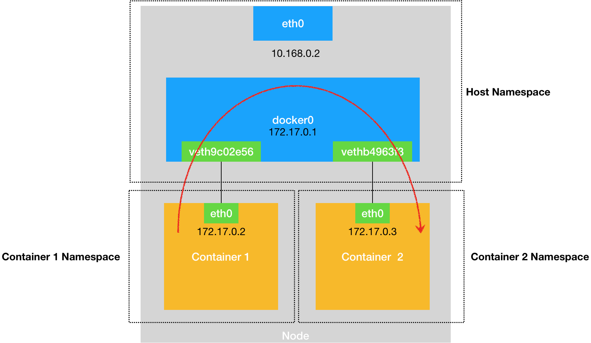

启动第一个container
casa@ce:~$ docker run -d --name agent-1 casa-vccap-host-agent:v1.0.1
8c5570dbc89f5d0e8b69ca4d41f0aa0ec2a488581c7a287c5c94d6f55972107c
casa@ce:~$ docker exec -it agent-1 /bin/sh
/ #
/ #
/ # ifconfig
eth0 Link encap:Ethernet HWaddr 02:42:AC:11:00:03
inet addr:172.17.0.3 Bcast:0.0.0.0 Mask:255.255.0.0
inet6 addr: fe80::42:acff:fe11:3/64 Scope:Link
UP BROADCAST RUNNING MULTICAST MTU:1500 Metric:1
RX packets:8 errors:0 dropped:0 overruns:0 frame:0
TX packets:8 errors:0 dropped:0 overruns:0 carrier:0
collisions:0 txqueuelen:0
RX bytes:648 (648.0 B) TX bytes:648 (648.0 B)
lo Link encap:Local Loopback
inet addr:127.0.0.1 Mask:255.0.0.0
inet6 addr: ::1/128 Scope:Host
UP LOOPBACK RUNNING MTU:65536 Metric:1
RX packets:0 errors:0 dropped:0 overruns:0 frame:0
TX packets:0 errors:0 dropped:0 overruns:0 carrier:0
collisions:0 txqueuelen:1
RX bytes:0 (0.0 B) TX bytes:0 (0.0 B)
/ # route -n
Kernel IP routing table
Destination Gateway Genmask Flags Metric Ref Use Iface
0.0.0.0 172.17.0.1 0.0.0.0 UG 0 0 0 eth0
172.17.0.0 0.0.0.0 255.255.0.0 U 0 0 0 eth0
/ #
启动第二个container
casa@ce:~$ docker run -d --name agent-2 casa-vccap-host-agent:v1.0.1
46fb7e364eaec177a3c79395dd533f156d7a7f9dba5a8e67403e3574f892e20d
casa@ce:~$ docker exec -it agent-2 /bin/sh
/ # ifconfig
eth0 Link encap:Ethernet HWaddr 02:42:AC:11:00:04
inet addr:172.17.0.4 Bcast:0.0.0.0 Mask:255.255.0.0
inet6 addr: fe80::42:acff:fe11:4/64 Scope:Link
UP BROADCAST RUNNING MULTICAST MTU:1500 Metric:1
RX packets:8 errors:0 dropped:0 overruns:0 frame:0
TX packets:8 errors:0 dropped:0 overruns:0 carrier:0
collisions:0 txqueuelen:0
RX bytes:648 (648.0 B) TX bytes:648 (648.0 B)
lo Link encap:Local Loopback
inet addr:127.0.0.1 Mask:255.0.0.0
inet6 addr: ::1/128 Scope:Host
UP LOOPBACK RUNNING MTU:65536 Metric:1
RX packets:0 errors:0 dropped:0 overruns:0 frame:0
TX packets:0 errors:0 dropped:0 overruns:0 carrier:0
collisions:0 txqueuelen:1
RX bytes:0 (0.0 B) TX bytes:0 (0.0 B)
/ # route -n
Kernel IP routing table
Destination Gateway Genmask Flags Metric Ref Use Iface
0.0.0.0 172.17.0.1 0.0.0.0 UG 0 0 0 eth0
172.17.0.0 0.0.0.0 255.255.0.0 U 0 0 0 eth0
/ #
/ # ping 172.17.0.3
PING 172.17.0.3 (172.17.0.3): 56 data bytes
64 bytes from 172.17.0.3: seq=0 ttl=64 time=0.178 ms
64 bytes from 172.17.0.3: seq=1 ttl=64 time=0.079 ms
^C
--- 172.17.0.3 ping statistics ---
2 packets transmitted, 2 packets received, 0% packet loss
round-trip min/avg/max = 0.079/0.128/0.178 ms
/ #
通过iptable跟踪packet
sudo modprobe ipt_LOG
sudo iptables -t raw -A PREROUTING -p icmp -j TRACE
sudo iptables -t raw -A PREROUTING -p icmp -j LOG --log-prefix icmp
May 22 13:41:51 ce kernel: icmpIN=docker0 OUT= PHYSIN=vethba02d22 MAC=02:42:ac:11:00:03:02:42:ac:11:00:04:08:00 SRC=172.17.0.4 DST=172.17.0.3 LEN=84 TOS=0x00 PREC=0x00 TTL=64 ID=45643 DF PROTO=ICMP TYPE=8 CODE=0 ID=6400 SEQ=0
May 22 13:41:51 ce kernel: TRACE: raw:PREROUTING:policy:3 IN=docker0 OUT= PHYSIN=vethba02d22 MAC=02:42:ac:11:00:03:02:42:ac:11:00:04:08:00 SRC=172.17.0.4 DST=172.17.0.3 LEN=84 TOS=0x00 PREC=0x00 TTL=64 ID=45643 DF PROTO=ICMP TYPE=8 CODE=0 ID=6400 SEQ=0
May 22 13:41:51 ce kernel: TRACE: mangle:PREROUTING:policy:1 IN=docker0 OUT= PHYSIN=vethba02d22 MAC=02:42:ac:11:00:03:02:42:ac:11:00:04:08:00 SRC=172.17.0.4 DST=172.17.0.3 LEN=84 TOS=0x00 PREC=0x00 TTL=64 ID=45643 DF PROTO=ICMP TYPE=8 CODE=0 ID=6400 SEQ=0
May 22 13:41:51 ce kernel: TRACE: nat:PREROUTING:rule:1 IN=docker0 OUT= PHYSIN=vethba02d22 MAC=02:42:ac:11:00:03:02:42:ac:11:00:04:08:00 SRC=172.17.0.4 DST=172.17.0.3 LEN=84 TOS=0x00 PREC=0x00 TTL=64 ID=45643 DF PROTO=ICMP TYPE=8 CODE=0 ID=6400 SEQ=0
May 22 13:41:51 ce kernel: TRACE: nat:KUBE-SERVICES:return:8 IN=docker0 OUT= PHYSIN=vethba02d22 MAC=02:42:ac:11:00:03:02:42:ac:11:00:04:08:00 SRC=172.17.0.4 DST=172.17.0.3 LEN=84 TOS=0x00 PREC=0x00 TTL=64 ID=45643 DF PROTO=ICMP TYPE=8 CODE=0 ID=6400 SEQ=0
May 22 13:41:51 ce kernel: TRACE: nat:PREROUTING:policy:3 IN=docker0 OUT= PHYSIN=vethba02d22 MAC=02:42:ac:11:00:03:02:42:ac:11:00:04:08:00 SRC=172.17.0.4 DST=172.17.0.3 LEN=84 TOS=0x00 PREC=0x00 TTL=64 ID=45643 DF PROTO=ICMP TYPE=8 CODE=0 ID=6400 SEQ=0
May 22 13:41:51 ce kernel: TRACE: mangle:FORWARD:policy:1 IN=docker0 OUT=docker0 PHYSIN=vethba02d22 PHYSOUT=vethe6fe429 MAC=02:42:ac:11:00:03:02:42:ac:11:00:04:08:00 SRC=172.17.0.4 DST=172.17.0.3 LEN=84 TOS=0x00 PREC=0x00 TTL=64 ID=45643 DF PROTO=ICMP TYPE=8 CODE=0 ID=6400 SEQ=0
May 22 13:41:51 ce kernel: TRACE: filter:FORWARD:rule:1 IN=docker0 OUT=docker0 PHYSIN=vethba02d22 PHYSOUT=vethe6fe429 MAC=02:42:ac:11:00:03:02:42:ac:11:00:04:08:00 SRC=172.17.0.4 DST=172.17.0.3 LEN=84 TOS=0x00 PREC=0x00 TTL=64 ID=45643 DF PROTO=ICMP TYPE=8 CODE=0 ID=6400 SEQ=0
May 22 13:41:51 ce kernel: TRACE: filter:KUBE-FORWARD:return:4 IN=docker0 OUT=docker0 PHYSIN=vethba02d22 PHYSOUT=vethe6fe429 MAC=02:42:ac:11:00:03:02:42:ac:11:00:04:08:00 SRC=172.17.0.4 DST=172.17.0.3 LEN=84 TOS=0x00 PREC=0x00 TTL=64 ID=45643 DF PROTO=ICMP TYPE=8 CODE=0 ID=6400 SEQ=0
May 22 13:41:51 ce kernel: TRACE: filter:FORWARD:rule:2 IN=docker0 OUT=docker0 PHYSIN=vethba02d22 PHYSOUT=vethe6fe429 MAC=02:42:ac:11:00:03:02:42:ac:11:00:04:08:00 SRC=172.17.0.4 DST=172.17.0.3 LEN=84 TOS=0x00 PREC=0x00 TTL=64 ID=45643 DF PROTO=ICMP TYPE=8 CODE=0 ID=6400 SEQ=0
May 22 13:41:51 ce kernel: TRACE: filter:DOCKER-ISOLATION:return:1 IN=docker0 OUT=docker0 PHYSIN=vethba02d22 PHYSOUT=vethe6fe429 MAC=02:42:ac:11:00:03:02:42:ac:11:00:04:08:00 SRC=172.17.0.4 DST=172.17.0.3 LEN=84 TOS=0x00 PREC=0x00 TTL=64 ID=45643 DF PROTO=ICMP TYPE=8 CODE=0 ID=6400 SEQ=0
May 22 13:41:51 ce kernel: TRACE: filter:FORWARD:rule:3 IN=docker0 OUT=docker0 PHYSIN=vethba02d22 PHYSOUT=vethe6fe429 MAC=02:42:ac:11:00:03:02:42:ac:11:00:04:08:00 SRC=172.17.0.4 DST=172.17.0.3 LEN=84 TOS=0x00 PREC=0x00 TTL=64 ID=45643 DF PROTO=ICMP TYPE=8 CODE=0 ID=6400 SEQ=0
May 22 13:41:51 ce kernel: TRACE: filter:DOCKER:return:1 IN=docker0 OUT=docker0 PHYSIN=vethba02d22 PHYSOUT=vethe6fe429 MAC=02:42:ac:11:00:03:02:42:ac:11:00:04:08:00 SRC=172.17.0.4 DST=172.17.0.3 LEN=84 TOS=0x00 PREC=0x00 TTL=64 ID=45643 DF PROTO=ICMP TYPE=8 CODE=0 ID=6400 SEQ=0
May 22 13:41:51 ce kernel: TRACE: filter:FORWARD:rule:6 IN=docker0 OUT=docker0 PHYSIN=vethba02d22 PHYSOUT=vethe6fe429 MAC=02:42:ac:11:00:03:02:42:ac:11:00:04:08:00 SRC=172.17.0.4 DST=172.17.0.3 LEN=84 TOS=0x00 PREC=0x00 TTL=64 ID=45643 DF PROTO=ICMP TYPE=8 CODE=0 ID=6400 SEQ=0
May 22 13:41:51 ce kernel: TRACE: mangle:POSTROUTING:policy:1 IN= OUT=docker0 PHYSIN=vethba02d22 PHYSOUT=vethe6fe429 SRC=172.17.0.4 DST=172.17.0.3 LEN=84 TOS=0x00 PREC=0x00 TTL=64 ID=45643 DF PROTO=ICMP TYPE=8 CODE=0 ID=6400 SEQ=0
May 22 13:41:51 ce kernel: TRACE: nat:POSTROUTING:rule:1 IN= OUT=docker0 PHYSIN=vethba02d22 PHYSOUT=vethe6fe429 SRC=172.17.0.4 DST=172.17.0.3 LEN=84 TOS=0x00 PREC=0x00 TTL=64 ID=45643 DF PROTO=ICMP TYPE=8 CODE=0 ID=6400 SEQ=0
May 22 13:41:51 ce kernel: TRACE: nat:KUBE-POSTROUTING:return:2 IN= OUT=docker0 PHYSIN=vethba02d22 PHYSOUT=vethe6fe429 SRC=172.17.0.4 DST=172.17.0.3 LEN=84 TOS=0x00 PREC=0x00 TTL=64 ID=45643 DF PROTO=ICMP TYPE=8 CODE=0 ID=6400 SEQ=0
May 22 13:41:51 ce kernel: TRACE: nat:POSTROUTING:policy:7 IN= OUT=docker0 PHYSIN=vethba02d22 PHYSOUT=vethe6fe429 SRC=172.17.0.4 DST=172.17.0.3 LEN=84 TOS=0x00 PREC=0x00 TTL=64 ID=45643 DF PROTO=ICMP TYPE=8 CODE=0 ID=6400 SEQ=0
May 22 13:41:51 ce kernel: icmpIN=docker0 OUT= PHYSIN=vethe6fe429 MAC=02:42:ac:11:00:04:02:42:ac:11:00:03:08:00 SRC=172.17.0.3 DST=172.17.0.4 LEN=84 TOS=0x00 PREC=0x00 TTL=64 ID=53618 PROTO=ICMP TYPE=0 CODE=0 ID=6400 SEQ=0
May 22 13:41:51 ce kernel: TRACE: raw:PREROUTING:policy:3 IN=docker0 OUT= PHYSIN=vethe6fe429 MAC=02:42:ac:11:00:04:02:42:ac:11:00:03:08:00 SRC=172.17.0.3 DST=172.17.0.4 LEN=84 TOS=0x00 PREC=0x00 TTL=64 ID=53618 PROTO=ICMP TYPE=0 CODE=0 ID=6400 SEQ=0
May 22 13:41:51 ce kernel: TRACE: mangle:PREROUTING:policy:1 IN=docker0 OUT= PHYSIN=vethe6fe429 MAC=02:42:ac:11:00:04:02:42:ac:11:00:03:08:00 SRC=172.17.0.3 DST=172.17.0.4 LEN=84 TOS=0x00 PREC=0x00 TTL=64 ID=53618 PROTO=ICMP TYPE=0 CODE=0 ID=6400 SEQ=0
May 22 13:41:51 ce kernel: TRACE: mangle:FORWARD:policy:1 IN=docker0 OUT=docker0 PHYSIN=vethe6fe429 PHYSOUT=vethba02d22 MAC=02:42:ac:11:00:04:02:42:ac:11:00:03:08:00 SRC=172.17.0.3 DST=172.17.0.4 LEN=84 TOS=0x00 PREC=0x00 TTL=64 ID=53618 PROTO=ICMP TYPE=0 CODE=0 ID=6400 SEQ=0
May 22 13:41:51 ce kernel: TRACE: filter:FORWARD:rule:1 IN=docker0 OUT=docker0 PHYSIN=vethe6fe429 PHYSOUT=vethba02d22 MAC=02:42:ac:11:00:04:02:42:ac:11:00:03:08:00 SRC=172.17.0.3 DST=172.17.0.4 LEN=84 TOS=0x00 PREC=0x00 TTL=64 ID=53618 PROTO=ICMP TYPE=0 CODE=0 ID=6400 SEQ=0
May 22 13:41:51 ce kernel: TRACE: filter:KUBE-FORWARD:return:4 IN=docker0 OUT=docker0 PHYSIN=vethe6fe429 PHYSOUT=vethba02d22 MAC=02:42:ac:11:00:04:02:42:ac:11:00:03:08:00 SRC=172.17.0.3 DST=172.17.0.4 LEN=84 TOS=0x00 PREC=0x00 TTL=64 ID=53618 PROTO=ICMP TYPE=0 CODE=0 ID=6400 SEQ=0
May 22 13:41:51 ce kernel: TRACE: filter:FORWARD:rule:2 IN=docker0 OUT=docker0 PHYSIN=vethe6fe429 PHYSOUT=vethba02d22 MAC=02:42:ac:11:00:04:02:42:ac:11:00:03:08:00 SRC=172.17.0.3 DST=172.17.0.4 LEN=84 TOS=0x00 PREC=0x00 TTL=64 ID=53618 PROTO=ICMP TYPE=0 CODE=0 ID=6400 SEQ=0
May 22 13:41:51 ce kernel: TRACE: filter:DOCKER-ISOLATION:return:1 IN=docker0 OUT=docker0 PHYSIN=vethe6fe429 PHYSOUT=vethba02d22 MAC=02:42:ac:11:00:04:02:42:ac:11:00:03:08:00 SRC=172.17.0.3 DST=172.17.0.4 LEN=84 TOS=0x00 PREC=0x00 TTL=64 ID=53618 PROTO=ICMP TYPE=0 CODE=0 ID=6400 SEQ=0
May 22 13:41:51 ce kernel: TRACE: filter:FORWARD:rule:3 IN=docker0 OUT=docker0 PHYSIN=vethe6fe429 PHYSOUT=vethba02d22 MAC=02:42:ac:11:00:04:02:42:ac:11:00:03:08:00 SRC=172.17.0.3 DST=172.17.0.4 LEN=84 TOS=0x00 PREC=0x00 TTL=64 ID=53618 PROTO=ICMP TYPE=0 CODE=0 ID=6400 SEQ=0
May 22 13:41:51 ce kernel: TRACE: filter:DOCKER:return:1 IN=docker0 OUT=docker0 PHYSIN=vethe6fe429 PHYSOUT=vethba02d22 MAC=02:42:ac:11:00:04:02:42:ac:11:00:03:08:00 SRC=172.17.0.3 DST=172.17.0.4 LEN=84 TOS=0x00 PREC=0x00 TTL=64 ID=53618 PROTO=ICMP TYPE=0 CODE=0 ID=6400 SEQ=0
May 22 13:41:51 ce kernel: TRACE: filter:FORWARD:rule:4 IN=docker0 OUT=docker0 PHYSIN=vethe6fe429 PHYSOUT=vethba02d22 MAC=02:42:ac:11:00:04:02:42:ac:11:00:03:08:00 SRC=172.17.0.3 DST=172.17.0.4 LEN=84 TOS=0x00 PREC=0x00 TTL=64 ID=53618 PROTO=ICMP TYPE=0 CODE=0 ID=6400 SEQ=0
May 22 13:41:51 ce kernel: TRACE: mangle:POSTROUTING:policy:1 IN= OUT=docker0 PHYSIN=vethe6fe429 PHYSOUT=vethba02d22 SRC=172.17.0.3 DST=172.17.0.4 LEN=84 TOS=0x00 PREC=0x00 TTL=64 ID=53618 PROTO=ICMP TYPE=0 CODE=0 ID=6400 SEQ=0